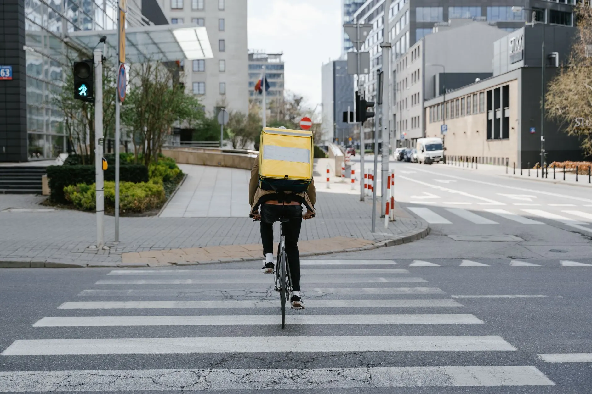

A página imita o documento que fecha a entrega. As duas pontas do negócio viram as duas vias do mesmo recibo: a via clara é do lojista, a via escura é do entregador. Serrilha de canhoto no lugar de divisor, campo com rótulo no lugar de card, carimbo no lugar de selo de confiança inventado.
Âmbar sobre branco mede 1,6:1 — some. Por isso ele nunca é texto aqui: é carimbo, fita e preenchimento de botão, sempre com o rótulo em grafite (10,7:1).
Rótulo com tracking de 0,28em — mais largo que nas outras direções, imitando etiqueta de formulário oficial. Corpo em 1,65 de entrelinha: ar de documento legível, não de painel denso.
Sem marca-d'água gigante: papel não tem logo atrás. Aqui o V só aparece pequeno e funcional.
Serrilha de canhoto — o divisor de seção do site inteiro.
Central de entregadores sob demanda para o pequeno comércio da Zona Leste. Você pede, a gente aciona quem está perto — e você recebe a prova de que chegou.

Vende pelo Instagram ou por marketplace e precisa entregar no mesmo dia, sem manter entregador na folha. É o caso mais comum de quem chega aqui.
Avulsa ou rota fixaReceita e medicamento que não podem esperar o dia seguinte.
UrgênciaRação e volume pesado, que pedem carro em vez de moto.
CarroArranjo com hora marcada, entregue de pé e sem sacudida no caminho.
Hora marcadaReforço nos horários de pico, sem contratar entregador fixo para um pico que dura duas horas.
PicoPedido pequeno e repetido, que fecha melhor como rota.
Rota fixaToda entrega fecha com foto e assinatura de quem recebeu. É o comprovante que você recebe de volta.
Você tem o que entregar.
Peça uma entrega avulsa ou contrate uma rota fixa com desconto por volume.
Solicitar entregasVocê tem moto, bike ou carro.
Receba por corrida ou por rota, sem precisar captar cliente sozinho.
Quero me cadastrar